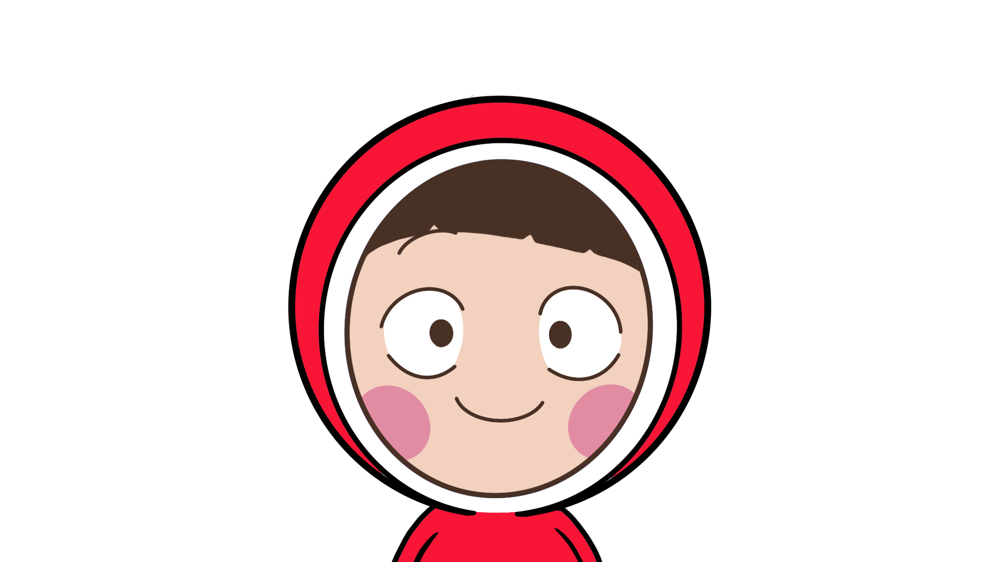

공감 세포
나의 공감세포는 다른 사람의 감정을 깊이 이해하고 공감하는 능력을 가진 세포다. 누군가 슬프거나 힘들어하면 함께 아파하고, 기쁘면 함께 웃으며, 그 감정을 온전히 받아들이고 나눈다. 단순히 위로만 하는 게 아니라, 상대의 마음을 진심으로 이해하려 노력하고 그 감정을 내 안에서도 느끼려 한다. 때로는 너무 깊이 공감해서 오히려 나 자신의 감정과 구분하기 어려울 때도 있지만, 그만큼 진심 어린 연결을 만들어낸다. 세상의 모든 감정을 포용하고 이해하려는 따뜻한 마음을 가진, 내 마음의 중심에 있는 가장 소중한 세포다.
